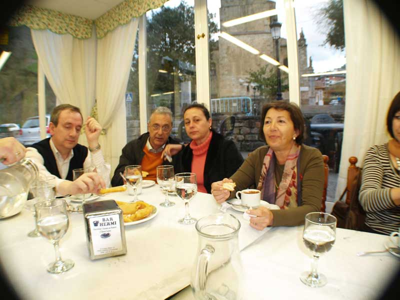

Encuentro en Santoña |
|
 Bueno, bueno, mirad que fotografía.... Carlos cogiendo, disimuladamente, un picatoste. Suso y Ana, mirando al pajarito. Mari Carmen escondiéndose un trozo de picatoste en la boca (se cree que no la hemos visto, je je) y media Pili, o sea Pi. |